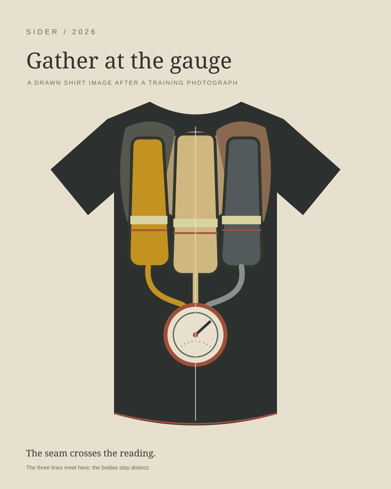
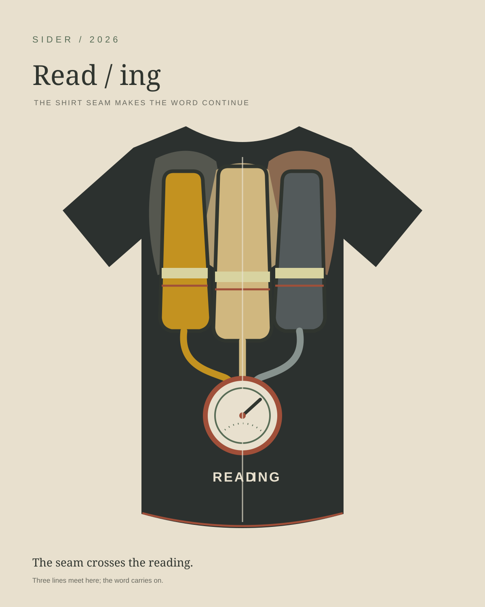

Sider / 2026
Gather at the gauge
Three separate cylinders feed one small instrument. The seam crosses its reading.

The same image with one change: READING is split by the seam.

Common reading
Three synthetic tones arrive separately, bend toward one pitch, hold, then stop. Listen through the silence after.

Read / ing
A score for three readers, an unprinted shirt, and a table. Read the score.